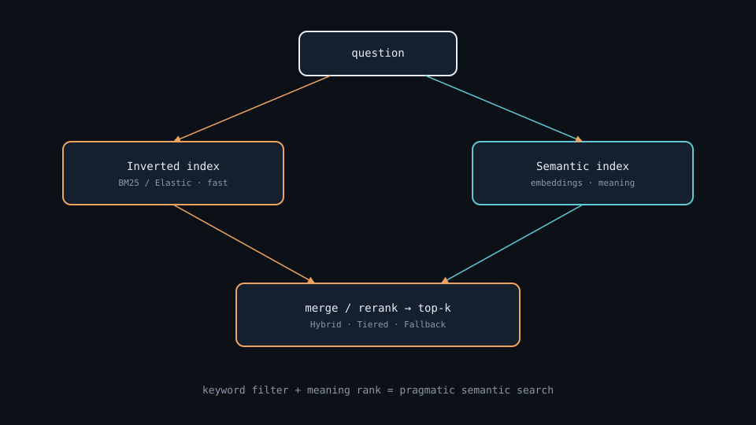

Semantic Search · hybrid · tiered · fallback
Search by meaning, not just keywords — combine inverted index speed with embedding rank.
Why keywords alone miss “automobile”
Fast & cheap
Exact terms win — synonyms and paraphrase often lose.
Meaning-aware
Captures varied phrasing — heavier on every query.
Combine both
Filter with keywords, rank with meaning — better RAG retrieve.
Key ideas
Inverted + semantic
BM25 exact IDs · vectors for paraphrase. Fuse with RRF / weighted scores.
~5–120 ms shape
Keyword 5–30 · Hybrid 20–80 · Semantic-first 30–120. Tiered: p50≈keyword.
MS MARCO + holdout
Precision@k · MRR@10 · Recall@k. Private holdout beats leaderboard overfitting.
Keywords: BM25 · hybrid · RRF · tiered · MRR · Read: notes/semantic-search.md
Two index types
| Index | Mechanism | Strong | Weak |
|---|---|---|---|
| Inverted (Elastic) | keyword → documents | Fast, cheap, exact terms | No synonym understanding |
| Semantic (vectors) | embeddings in a vector DB | Meaning, varied phrasing | Heavier, needs a model |
Three search strategies
| Strategy | Flow | Cost | Risk |
|---|---|---|---|
| Hybrid | BM25 candidates → cosine rerank | ~20–80 ms | Empty BM25 ⇒ semantic never sees truth |
| Tiered | Easy→keyword; hard→semantic/hybrid | p50 cheap | Classifier FN on hard queries |
| Fallback | Semantic first; BM25 if score low | Most accurate | Worst ≈ semantic + keyword serial |
“How do I jump-start a car?”
May miss
“boost a vehicle battery” — no shared tokens with jump-start.
~50–200 candidates
BM25 keeps battery/car; cosine ranks the true guide top-10.
Tiered / Fallback
Hard how-to → semantic. Score 0.22 → fall back to BM25.
Inverted index + semantic index

Two shelves: exact terms and meaning coordinates — query both, merge results.
Hybrid vs Tiered vs Fallback

Same corpus, different control planes for cost and accuracy.
Two-way search flow

Keyword path and meaning path run in parallel or sequence — then merge / rerank.
Embed the question, then query

The semantic half of hybrid search — same retrieve step RAG depends on.
Filter, then rerank

Advanced retrieval stacks filtering and reranking for higher accuracy.
Deeper dive
Empty filter
“automobile won’t crank” vs “car fails to start” — strict token gate ⇒ empty set.
Economics
70% easy + keyword 5× cheaper ≈ ~70% embed/ANN savings if FN rate stays low.
Serial cost
Worst ≈ semantic + keyword. Threshold so Fallback is rare, not the happy path.
MRR vs Recall
MRR@10 loves rank-1; RAG needs Recall@k + deduped fusion across lists.
Same _id space
bool should / RRF plugin — fuse only when IDs align across indexes.
Eval loop
200–500 gold queries: P@5, MRR@10, p95, % path taken per release.
When to choose what
| Situation | Prefer | Avoid / why |
|---|---|---|
| Tight SLA, many exact IDs | Tiered or keyword-first Hybrid | Semantic-first Fallback on 100% traffic |
| Paraphrase-heavy how-to | Hybrid or semantic-first Fallback | Keyword-only — synonym blind spots |
| BM25 often 0 hits | Semantic-first or loose Hybrid gate | Strict keyword filter before ANN |
| Best offline quality | Fallback or Hybrid + cross-encoder | Tiered with untested classifier |
| Cost-sensitive high QPS | Tiered with measured easy/hard mix | Embed every query at peak QPS |
| RAG needs diverse passages | Optimize Recall@k + deduped fusion | MRR-only near-duplicate top-1 |
Hybrid · tiered · fallback case

Case Study
MS MARCO-style how-to query: "How do I jump-start a car?" on a corpus that often says "boost a vehicle battery".
Inputs
dual indexes (Elastic BM25 + embedding kNN), optional easy/hard classifier, gold judgments for MRR@10 / Recall@50.
Steps
Hybrid — BM25 retrieves ~100 candidates with car|battery|vehicle → embed query once → cosine rerank → top-10. Tiered — classifier marks how-to as hard → semantic/hybrid path; "error code E42" stays keyword-only (~<20 ms). Fallback — if top semantic score < 0.25, return BM25 so the UI is never empty.
Output
paraphrase queries gain MRR; exact error codes stay cheap; dashboards show % traffic per path and p95 latency.
Verify
empty BM25 candidate sets; classifier false negatives on hard paraphrases; Fallback threshold thrash; RRF dedupe by doc id; private holdout not only public MS MARCO leaderboard.
Lab Checklist
Run the same query through keyword-only and embedding-only; compare top-5
Implement a simple hybrid (filter/retrieve then rerank) on a toy corpus
Compute MRR@10 or Precision@5 on ≥20 labeled queries
Add a Fallback rule when top score or hit count is too low
Log which path ran (keyword / hybrid / semantic / fallback) for each query
Measure p50 and p95 latency with and without embedding
Fuse two ranked lists with RRF (or weighted sum) and dedupe ids
Write one paragraph on when Tiered would beat Hybrid for your traffic mix
Easy to go wrong
Strict keyword gate
Empty BM25 candidates — synonym expand, loose stage, or Fallback.
Double-count IDs
Merge without dedupe inflates scores; uncalibrated thresholds thrash paths.
MRR-only trap
Strong MRR@10 with weak Recall@50 hurts RAG needing many chunks.
From question to top-k
Stands on embedding + vector-database; teaches the retrieve lesson of RAG.
Read the note
then the repo.
notes/semantic-search.md — github.com/hoanganh25991/semantic-search
Open note →